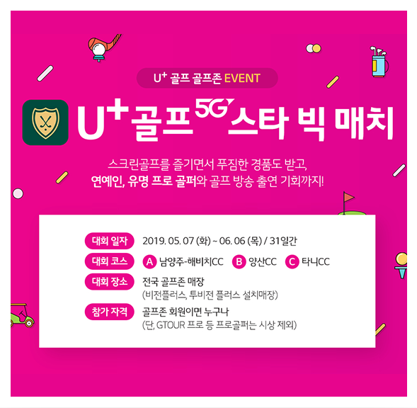

LG유플러스
U+ GOLF 앱 런칭
연예인과 함께하는 미디어 컨텐츠 5G 스타 빅매치
이슈화 및 전략적 홍보를 통한 앱 다운로드 유도
#애플리케이션 런칭 & 다운로드 #스크린골프대회 #미디어컨텐츠

- 캠페인 배경
- 유플러스는 TV보다 더 재미있는 골프중계 서비스 U+골프.
U+골프는 기존 골프부킹 중심의 어플리케이션 기능을 탈피한 인기선수 독점중계,
출전선수 스윙보기, 지난 홀 다시보기, TV로 크게 보기의 특징을 가지고 있는 골프 미디어
특화 애플리케이션을 런칭, 홍보와 함께 실제로 애플리케이션을 활용할 수 있는 골퍼들을
대상의 다운로드 KPI(액티브 유저 확보)를 위하여 골프존과 콜라보레이션을 진행 하였습니다.
- 캠페인 진행사례
- 5G로 더욱 더 강력해진 유플러스 골프의 활용법을 많은 사람들에게 알리고자
프로골퍼와 연예인을 초청한 골프 대회를 기획- 온라인 스크린골프대회를 통한 애플리케이션 홍보, 다운로드 유도
- 연예인+프로골퍼+아마추어골퍼가 한팀으로 참여하는 U+골프 5G 스타 빅 매치 시행
- 대회 진행 과정에서 5G 특화기능인 스윙 밀착영상을 노출하며 기술의 우수성 홍보
- 애플리케이션 다운로드 활성화를 위한 추가 이벤트, 애플리케이션 다운로더 대상 시상 진행
- 주요성과와 인사이트
-
21,484회
이벤트 참여 수
13,004명대회 참여자 수
당일 시청률
1위JTBC GOLF
캠페인 적용 사례

커뮤니케이션 담당자
제휴사업팀 이준희 프로 프로 ljh@golfzon.com